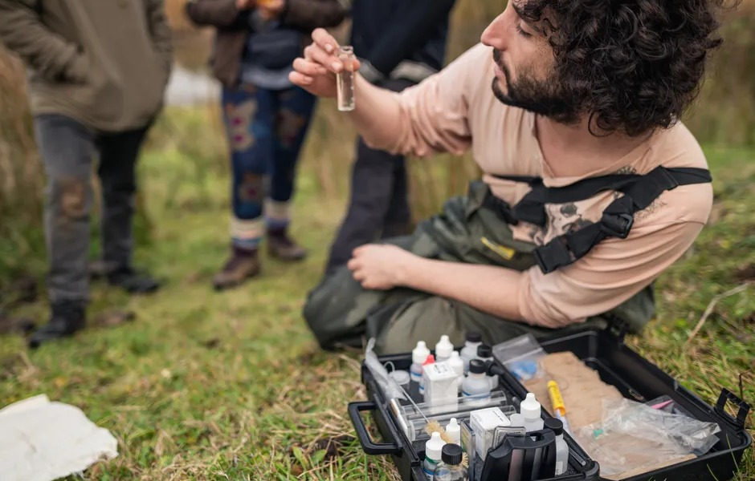

01 · Características del agua
Fisicoquímico
Mide variables del agua como temperatura, turbidez, pH y oxígeno disuelto para describir sus condiciones y variaciones.
Permite conocer condiciones del agua a partir de una toma de muestra, la lectura de parámetros y el registro inmediato de resultados.
- Toma de muestra
- Lectura de parámetros
- Registro inmediato de resultados